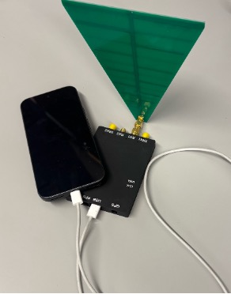
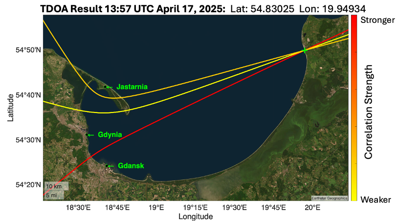

Find the signal source, not just the interference.
ATLAS SIGINT applies time difference of arrival (TDOA) to radio-frequency signals, with the goal of localizing jammers and spoofers using commercial off-the-shelf software-defined radio hardware.
Talk to us ↗
Use TDOA to put a radio emitter on the map.
Like ATLAS Gunshot Localization, SIGINT uses arrival-time differences observed at multiple receivers to generate a location estimate. In this case, the observations are radio-frequency signals from a jammer or spoofer rather than acoustic arrivals.
The challenge is timing: radio signals propagate at the speed of light, not the speed of sound. That makes the synchronization and measurement problem substantially more demanding, while preserving the same core objective—convert multiple observations into a usable map location.
Experimental localization of a Russian spoofer.
This experimental TDOA result from Poland shows the localization workflow applied to a Russian spoofer. The result was collected with a separate custom-built system—not the Android and SDR setup pictured above.
That field system cost approximately $1,000. It demonstrates the value of the approach and informs the ongoing work to port the capability into a more accessible phone-connected SDR configuration.

Bring the experiment closer to the edge.
The current effort is focused on translating the lessons from the custom system into an Android-compatible, phone-connected SDR workflow.
Custom TDOA system
Experimental field results demonstrate the radio-frequency localization approach.
Android + COTS SDR
Port the measurement and localization workflow to a mobile, phone-connected setup.
Field-ready SIGINT
Give teams a practical way to identify and map sources of RF interference.
ATLAS GNSS Integrity↗